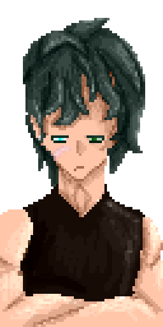

Introduction
Strange Seas is a short game built for the 2026 ACER STEM Video Games Challenge in around 6 months. It represents the theme 'Ocean'. It is a mostly upgrade based game, with a small amount of story.
Gameplay

The player character starts in Veitgard, where a strange glitch in the world happens after you wake up, you talk to various NPCs around the town, and an angler tells you that the ocean needs to be saved. The journey takes you through multiple biomes until you get to clockwork and save the world with an artifact that closes the portals. The objective of the game is to travel through biomes and catch fish to gain income, and ultimately close the portals and save the world.
Intended Audience
Young children/Teenagers. This is generally due to the game having more complicated systems to interact with, and older children will have a more accessible time interacting with it, because it is easier to learn to play. However, the game is suited to any age, as there is no restricting content and multiple difficulty modes for experienced and non-experienced.
Why To Play
The game can be relatively short, but almost all gameplay is interacting with new stuff including discovering new fish (which happens more often than not because any fish you haven't caught before gets a large boost in the weight pool), exploring new areas, reading lore, or solving a puzzle. The actual gameplay is also entertaining for the length of the game, if the game was longer we would have to introduce more elements as it would get quite stale.